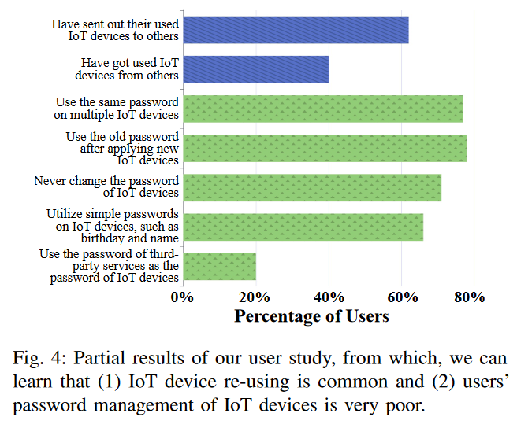
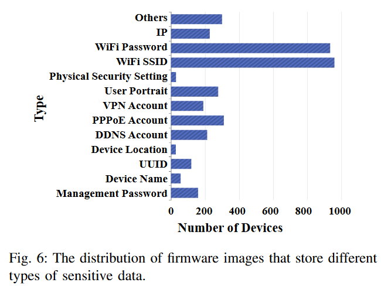

![[Review] How IoT Re-using Threatens Your Sensitive Data: Exploring the User-Data Disposal in Used IoT Devices](/images/13/cover.png)
[Review] How IoT Re-using Threatens Your Sensitive Data: Exploring the User-Data Disposal in Used IoT Devices
This paper performs the first in-depth investigation on the user-data disposal of used IoT devices, and finds that:
- Most users lack the awareness of disposing used IoT devices.
- IoT devices collect more sensitive data than users expect, and current data protections of used IoT devices are inadequate.
- The disposal methods of used IoT devices are often ineffective.
Implementation:
RQ1: Which kinds of sensitive data reside in used IoT devices?
RQ2: Which methods can be used to dispose of sensitive data?
RQ3: Are existing disposal methods effective in erasing the sensitive data?
Conduct a user study to understand the user awareness of sensitive data or how to dispose of data.

Design a system to detect sensitive data collection in IoT firmware image.
Test real world IoT devices to evaluate data disposal efficiency.
Raise ethical considerations(always included in IoT related papers).
Evaluation:
- Evaluates the effectiveness of the designed system
- Compares the system detection result with manual detection result.
- Compares the system with other systems(SOTA sensitive information tracking systems).
Result:
Answer to RQ1
- Device management information
- Network setting information
- Third-party account information
- User portrait information

Answer to RQ2(apply manual test)
- Overwrite or remove sensitive data through a user interface.
- Perform a soft resetting by clicking the “reset to factory defaults” button on the configuration page of an IoT device.
- Perform a hard resetting by pressing the RESET button on the device.
- Perform a firmware upgrade by clicking the “upgrade firmware” button on the configuration page of an IoT device.
- Log in to the terminal of an IoT device and overwrite/remove the files that store user data.
Answer to RQ3(often ineffective)

Future work:
- A better system to detect sensitive data collection.
- Apply automatic analysis to the early manual analysis.
- Test a larger IoT device database.
- Design a safer and more effective data disposal method for IoT device.
[Review] How IoT Re-using Threatens Your Sensitive Data: Exploring the User-Data Disposal in Used IoT Devices